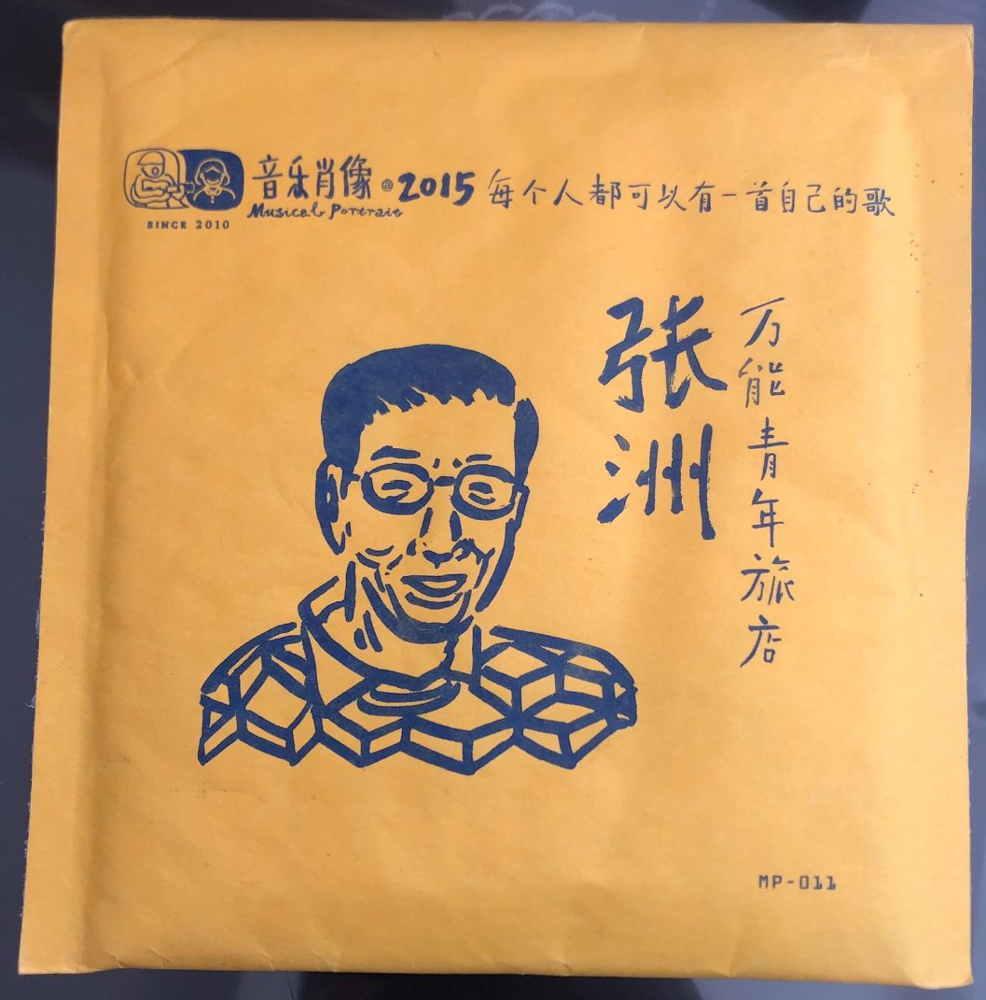
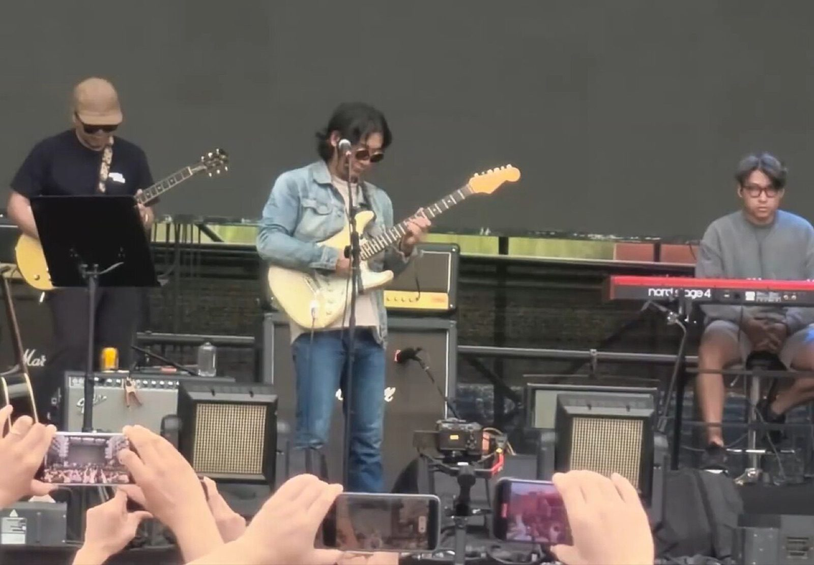

万能青年旅店Omnipotent Youth Society · 中国摇滚 · 1996–今
一支乐队用十四年磨出了第一张专辑，第一张专辑的最后一首歌，成了中国北方一座工业城市的「市歌」。[6] 又过了十年，他们才交出第二张——上线半天卖了二十万张[3]。这些年里成员来来去去，一直都在的只有两个人：写旋律的董亚千，写词的姬赓。[1][3]
档案乐队速览
- 名字
- 万能青年旅店（Omnipotent Youth Society），乐迷简称「万青」。前身 The Nico，名字取自美国盲瓜乐队（The Blind Melon）已故主唱 Shannon Hoon 小女儿的名字[4][1]
- 更名
- 2002 年。姬赓的解释：「我觉得我们乐队这些年太败了，所以换名字冲冲晦气」[4]
- 成军地
- 河北省石家庄市。排练室是主唱董亚千家不到 20 平米的小屋，钥匙压在门下水泥板底下，谁都能进来——人称「旅店」[4][10]
- 两个人
- 董亚千（主唱/吉他，全碟作曲）、姬赓（贝斯，全碟作词）——成立至今唯一没换过的两位[1][3]
- 活动期
- 1996–今（2010 年才出第一张专辑，2020 年第二张）[1][8]
- 奖项
- 第 11 届音乐风云榜最佳摇滚新人、最佳摇滚专辑、最佳摇滚歌曲（〈不万能的喜剧〉）[3][5]；第 11 届华语音乐传媒大奖最佳乐队[5]；第 12 届迷笛奖年度最佳摇滚乐队/专辑/歌曲（〈河北墨麒麟〉）[3]
- 唱片公司
- 自主厂牌「郊眠寺」；2014 年起与摩登天空签演出经纪约（创作不受约束）[2][3]
历史从「旅店」到万青

1996 年，董亚千和小学同学姬赓、鼓手张培栋在石家庄组了乐队 The Neo——不对，是 The Nico，名字来自他们最爱翻唱的盲瓜乐队主唱的小女儿。[4][1] 那间收留各路闲散青年的小屋，就是乐队的一切：排练在这里，后来第一张专辑的大部分录音也在这里。[4][10]
九十年代末到 2002 年，乐队几乎散伙：姬赓考上长沙的大学[4]，董亚千患上抑郁症，去秦皇岛疗养——后来那首〈秦皇岛〉就写的是这段日子[4][19]。2002 年底更名「万能青年旅店」；2006 年前后乐队重组，小号手史立、萨克斯手冯玉良、大提琴手鲁轶等陆续加入，不插电小样〈不万能的喜剧〉开始在网上流传。[4][2]
2010 年 11 月 12 日，首张同名专辑出版。此后十年乐队几乎从公众视野消失——只在 2014 年签了摩登天空的演出经纪约、2015–16 年做了「河北墨麒麟」巡演、2016 年参加「音乐肖像」计划录了单曲〈张洲〉[3][2]。2019 年秋天，排练厅迁进河北电影制片厂——一栋照着河南电影制片厂图纸建、却把图纸看反了的楼，「门是反手开的，锁安在屋子里面」。[10][12] 2020 年 12 月 22 日，第二张专辑《冀西南林路行》出版。[1][8]
- 1996The Nico 成立：董亚千、姬赓、张培栋；排练室即董亚千家（「旅店」）[4]
- 1999第一首作品〈巢穴在望〉（1998 录）收进摇滚合辑《非常次序》[4]
- 2000–02姬赓赴长沙读大学；董亚千抑郁症赴秦皇岛疗养；2002 年底更名「万能青年旅店」[4]
- 2006重组（史立等加入）；小样《废人们 都在忙什么?》；〈不万能的喜剧〉网络流传[4][2]
- 2009首张 EP《万能鸵鸟驯养指南》（2 月 2 日）[1][3]
- 2010首张专辑《万能青年旅店》（11 月 12 日，独立发行）；豆瓣年度第一张[8][1]
- 2011音乐风云榜最佳摇滚新人/专辑；华语音乐传媒大奖最佳乐队[3][5]
- 2012–13与台湾乐团甜梅号联合巡演；2013 年首次台湾演出；韩寒手抄〈杀死那个石家庄人〉歌词推荐[3][10][1]
- 2015–16「河北墨麒麟」系列专场巡演；单曲〈张洲〉（音乐肖像计划）[3]
- 2019排练厅迁入河北电影制片厂；年底鼓手冯江加入[10][3]
- 2020第二张专辑《冀西南林路行》（12 月 22 日，数字专辑）[1][3]
- 2021姬赓获「2020 年度石家庄市政府特殊津贴专家」——摇滚乐手首例[13][12]
- 2023第 12 届迷笛奖：年度最佳摇滚乐队、最佳摇滚专辑（〈河北墨麒麟〉最佳摇滚歌曲）[3]



成员名单一直在流动




| 成员 | 位置 | 备注 |
|---|---|---|
| 董亚千 | 主唱 / 吉他 / 曼陀铃 | 全碟作曲。早年在秦皇岛疗养期间写出〈秦皇岛〉[4][2] |
| 姬赓 | 贝斯 | 全碟作词。2000 年考入中南林业科技大学，2004 年回石家庄读研[4] |
| 史立 | 小号 / 长笛 / 次中音号 | 2006 年重组时加入[4][2] |
| 冯江 | 鼓 | 2019 年底加入[3]。此前鼓手几经更替，另有「现任鼓手杨友耕」一说，见来源分歧 |
| 合作乐手 | 萨克斯 / 小提琴 / 键盘 / 大提琴 等 | 名单随巡演流动：冯玉良、鲁轶、杨旭、李增辉、刘阔等先后参与[2] |
| 离队 | 张培栋（鼓，2001 赴日）、荀亮（鼓）、崔旭东（吉他）等 | 早期成员[4] |
经典歌曲杀死那个石家庄人
词：姬赓 · 曲：董亚千 · 编曲：万能青年旅店 · 收录于《万能青年旅店》（2010-11-12），专辑最后一首[6][8]
妻子在熬粥 我去喝几瓶啤酒
如此生活30年 直到大厦崩塌
云层深处的黑暗啊 淹没心底的景观 副歌节选 · 词：姬赓 · 全文见网易云歌词页[14]（另有乐迷联想 2001 年石家庄爆炸案，无可靠出处，姬赓本人的解释见下）
它为什么成立
结构：三段叙事，一家三口。姬赓自己的解释：「这歌讲的就是一家三口，日常生活的悲剧。冷漠的父亲，绝望的母亲，尚未被驯服的儿子。这样的家庭在我生活的家属院就有很多。这不是一个正常的成长过程，是对热情和自尊的蚕食。」[6][4]
编曲：开场是曼陀铃的拨弦，口琴和大提琴垫在底下；中段标志性的小号进来，把叙事接过去；结尾电吉他与鼓的音墙推起来，董亚千从平静的白描唱到嘶吼。[6][5] 曼陀铃是董亚千的乐器之一[2]——这支乐队很少用音墙叙事，这一段的爆发因此格外重。
歌词：「八角柜台」「人民商场」里的「一张假钞买一把假枪」——姬赓说，「八角柜台」是想象出来的意象，「人民商场」是他小时候河北最热闹的百货商场，后来破落了；「乒乓少年」暗喻一个压抑的乖乖牌，打球是他郁闷的青春唯一的宣泄。[6] 歌词把九十年代国企改制、下岗潮里北方工业家庭的失语，压缩成三段白描。[6][10]
为什么是它：这首歌被石家庄人当作「市歌」[6]；2012 年台湾乐评人马世芳评价它是中国当代摇滚最精彩的作品（中文媒体转述，未见原始文面）[10]；2013 年韩寒把歌词抄成字帖发布[1][16]。
延伸再听两首
董亚千在秦皇岛疗养期间写下的歌——小号像从海面上吹过来，8 分钟里从孤岛回到人间。它是这张专辑「讲故事」能力的另一极。
《冀西南林路行》里最亮的一首：山间神灵「不自知的灵动与即将招致的危险」[10]。听完它，你会明白这十年他们没有白等。
短片把这一站装进一首歌里
无声资料版，长度与〈杀死那个石家庄人〉全曲一致（网易云口径 5:44.25）。建议另开播放器同步播放这首歌。
分歧来源分歧与存疑处
| # | 事项 | 各说 |
|---|---|---|
| 1 | 重组完成时间 | 快懂百科记 2004 年 4 月（「另一种说法是 2006 年间」）[4]；百度百科记 2006 年[3]。本页取 2006 前后。 |
| 2 | 现任鼓手 | 英文维基现任成员列冯江（鼓）、杨友耕列已离队[1]；快懂百科称乐队「由……鼓手杨友耕组成」[4]；界面新闻记 2019 年底冯江加入[3]。本页按冯江处理，杨友耕存疑。 |
| 3 | 首专曲目数 | 快懂百科曲目表列 8 首（缺〈在这颗行星所有的酒馆〉）[5]；MusicBrainz 与 Discogs 均为 9 首[8][9]。以 MusicBrainz 为准。 |
| 4 | 二辑销量 | 「上线半天 20 万张、两周销售额过千万」[3]／「首月销量近 50 万张」[4]／「70 万张，创中国独立数字专辑纪录」[1]。三说并存，本页引用 20 万张口径（半天）。 |
| 5 | 「姬赓」写法 | 维基与百度百科作「姬赓」[1][3]；部分媒体行文作「姬庚」（如新浪博客转载、部分乐评）。「赓」为正字口径。 |
| 6 | 歌曲灵感联想 | 百度百科记「一度被乐迷猜测这首歌的灵感来自 2001 年石家庄爆炸案」[6]——乐迷联想，无当事人或乐评佐证；姬赓本人的解释是一家三口的日常悲剧[6][4]。 |
| 7 | 〈杀死那个石家庄人〉原名 | 百度百科：「原名《那个石家庄人》」[6]，未见他源旁证，按「原名」处理但标注单一来源。 |
来源资料来源
- 英文维基百科 · Omnipotent Youth Society — en.wikipedia.org/wiki/Omnipotent_Youth_Society
- 中文维基百科 · 万能青年旅店 — zh.wikipedia.org/wiki/万能青年旅店
- 百度百科 · 万能青年旅店 — baike.baidu.com/item/万能青年旅店
- 快懂百科 · 万能青年旅店 — baike.com/wikiid/7158714397787455518
- 快懂百科 · 《万能青年旅店》专辑 — baike.com/wikiid/847748163832082058
- 百度百科 · 杀死那个石家庄人 — baike.baidu.com/item/杀死那个石家庄人
- 快懂百科 · 杀死那个石家庄人 — baike.com/wikiid/7257306275565240376
- MusicBrainz ·《万能青年旅店》（2010-11-12，CN 版 release，9 曲时长） — musicbrainz.org/release/263f5af9
- Discogs Fandom ·《万能青年旅店》专辑页 — discogs.fandom.com（zh）
- 界面新闻 ·《石家庄摇滚往事：万青与华北平原的忧伤》（2019） — jiemian.com/article/9768410.html
- 南方人物周刊（南方+）·《万能青年旅店 并肩莽莽原野荒｜时代的肖像》（2019 年第 17 期，姜晓明图/文） — static.nfapp.southcn.com
- 燕赵都市报 ·《封神 11 年的万青获官方「点赞」》（2021-11-12，PDF） — yzdsb.hebnews.cn
- 新浪娱乐 ·《〈杀死那个石家庄人〉贝斯手获石家庄人才津贴》（2021-11-04） — ent.sina.com.cn
- 网易云音乐 ·〈杀死那个石家庄人〉歌词（lrc，id 386844） — music.163.com/#/song?id=386844
- Time Out Shanghai · Interview: Omnipotent Youth Society（2012-07-02，Archive） — timeoutshanghai.com（存档）
- Beijing Cream · Friday Night Musical Outro（韩寒手抄歌词转述，2013-01） — beijingcream.com
- The World of Chinese · How OYS Captured the Emotions of a Generation（2022） — theworldofchinese.com
- 澎湃/看理想 ·《万能青年旅店：用十年时间，朝前走了一步》（2021） — thepaper.cn/newsDetail_forward_10836994
- MusicBrainz · 艺人页（OYS，含 2020《冀西南林路行》release-group） — musicbrainz.org/artist/4cd1ce8c
图片来源
band_2025.jpg — 万青 2025 年南丹音乐节演出照 · Wikimedia Commons（File:万青 2025 南丹音乐节.jpg，中国新闻社，CC BY 4.0）。
cover_1st.png —《万能青年旅店》专辑封面（2010）· Cover Art Archive / MusicBrainz（release-group 860dc2de）。
cover_2nd.png —《冀西南林路行》专辑封面（2020）· Cover Art Archive / MusicBrainz（release-group 0b3afb3c）。
cover_zhangzhou.png —〈张洲〉单曲封面（音乐肖像计划，2015/2016）· Cover Art Archive / MusicBrainz（release-group 3397cad3）。
sjz_skyline2012.jpg — 石家庄天际线（2012，黄昏）· Wikimedia Commons（File:Skyline of Shijiazhuang 2012.jpg）。
sjz_towers.jpg — 石家庄住宅高楼 · Wikimedia Commons（File:石家庄高楼.jpg）。
sjz_centre.jpg — 石家庄市中心 · Wikimedia Commons（File:Shijiazhuang city centre.jpg）。
以上图片版权归原权利人所有，此处非商用个人阅读使用；专辑封面版权归万能青年旅店/唱片公司。